Project 3: Flow Models
Part A uses a pretrained flow model to denoise, generate and edit images and to make optical illusions. Part B trains flow matching models on MNIST from scratch.
then time-conditioned and class-conditioned flow matching models sampled with classifier-free guidance.Part A: Exploring the Power of Flow Models
Part A uses the pretrained text-to-image flow model PixNerd-XXL-P16-T2I; nothing is trained. The convention is \(x_t = (1-t)\,\epsilon + t\,x_1\): t = 0 is pure noise and t = 1 is a clean image. Images are 512×512, the seed is 180, the Euler step size is h = 0.02, and the CFG weight is w = 7 wherever guidance is used.
A.1 Visualizing Training and Sampling
A.1.1 Constructing noisy training inputs
My own image is a photo of a monkey. One noise tensor is sampled and reused at all three times, so only the noise amount changes.
def interpolate(image, noise, t):
return (1 - t) * noise + t * image # t = 0: pure noise, t = 1: clean imageBoth endpoints are asserted: t = 0 returns the noise exactly and t = 1 returns the image.
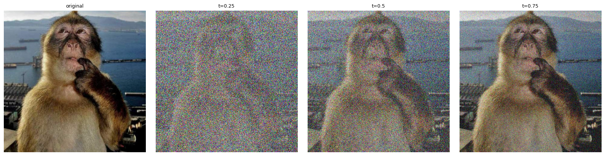
A.1.2 Classical denoising
Each noisy input is divided by t to restore the image amplitude, then Gaussian-blurred. I tried σ ∈ {1, 2, 4, 8, 16} and kept the one with the lowest MSE to the clean image: σ = 8, 4, 2 for t = 0.25, 0.50, 0.75.
candidates = {s: gaussian_blur(x / t, [int(6*s + 1)] * 2, [s, s]) for s in [1., 2., 4., 8., 16.]}
sigma = min(candidates, key=lambda s: ((candidates[s] - image) ** 2).mean().item())


Blur trades noise for detail. At t = 0.25 the best blur is still a smeared mess of colored blotches.
A.1.3 One-step denoising
One velocity prediction, extrapolated straight to t = 1, with the prompt "a high quality photo":
@torch.inference_mode()
def one_step_denoise(x, t, condition, predict_velocity):
v = predict_velocity(x, t, condition)
return x + (1 - t) * v # x_1 estimate


The noise is completely gone at every time, but the result is smooth and loses detail. At t = 0.25 the face is a different, blurry face; at t = 0.75 it is close to the original.
A.1.4 Visualizing velocity
def velocity_diagnostics(x_t, t, clean_image, epsilon, condition, predict_velocity):
v_pred = predict_velocity(x_t, t, condition)
v_gt = clean_image - epsilon # true path velocity
pred_update, gt_update = (1 - t) * v_pred, (1 - t) * v_gt
error_map = ((pred_update - gt_update) ** 2).mean(dim=1).sqrt() # RMS over RGB, per pixel
return pred_update, gt_update, error_map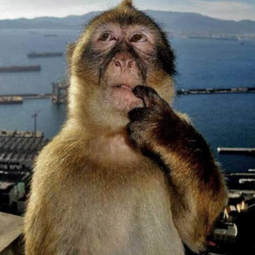


The predicted update matches the ground truth in its overall shape and color shift. The error is concentrated on edges and textured areas (fur, face, ship outlines), which are the details the model cannot know exactly. It shrinks steadily as t grows and is almost zero at t = 0.75, because less noise remains to be identified.
A.1.5 Iterative denoising with Euler sampling
@torch.inference_mode()
def euler_sample(x_start, t_start, step_size, velocity):
x, t = x_start.to(torch.float32), float(t_start)
states, n = [(t, x)], 0
while t < 1 - 1e-9:
h = min(step_size, 1 - t) # shorten the last step if needed
t_next = 1.0 if h >= 1 - t - 1e-9 else t + h
x = x + (t_next - t) * velocity(x, t) # velocity is recomputed at every step
t, n = t_next, n + 1
if n % 5 == 0 or t == 1.0:
states.append((t, x)) # every fifth update and the final one
return x, statesI tested it with a constant velocity field: from t = 0 it makes 50 steps, from 0.5 it makes 25, and from 0.93 it makes 4 (the last one shortened). It always ends exactly at t = 1 with the analytically expected value. The saved t = 0.50 input is denoised with 25 Euler updates.
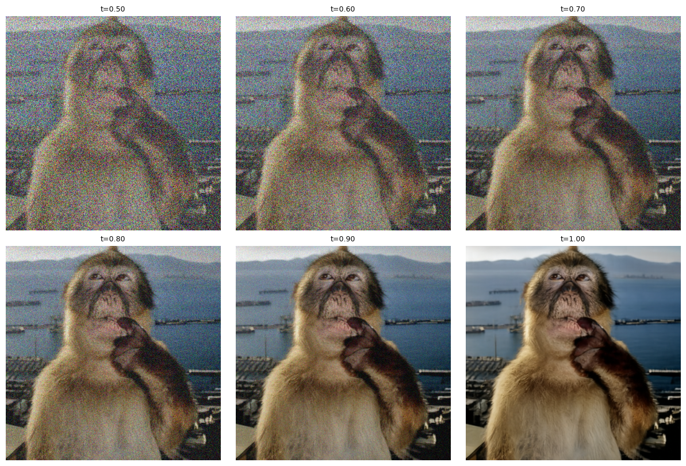

Comparison
| Method | Network calls | Noise | Detail | Result |
|---|---|---|---|---|
| Gaussian blur | 0 | reduced, color blotches remain | destroyed | blurry and still noisy |
| One-step | 1 | removed | smoothed away | clean but soft |
| Euler (25 steps) | 25 | removed | sharp, realistic | a photo, not an exact copy |
Gaussian blur averages neighbouring pixels. It cannot tell noise from detail, so edges, fur and the harbor are blurred together while low-frequency color noise survives. It never adds information, so the result is a soft, still-noisy copy of the input.
One-step denoising removes all the noise and recovers the overall structure: pose, hand, shoreline and colors. But the result is smooth and painterly, and the fur texture, whiskers and facial details are missing. At t = 0.5, half of the signal is already noise. With a squared-error objective the model's best single guess is the average of all clean images consistent with the input, and an average is blurry. This is the same regression-to-the-mean effect that made the pure-noise denoiser in Part B produce one blurry blob, only milder because here half of the information is present. The straight-line extrapolation also relies on a velocity that is only accurate at the current point of the path.
Euler denoising takes small steps and recomputes the velocity at each new, slightly cleaner state, so the model can commit to details gradually. The trajectory shows this: the monkey's pose and the hand are fixed by t ≈ 0.7–0.8, and fur, face and harbor detail sharpen during the last steps. The final image is sharp, noise-free and photographic. It is not an exact reconstruction: the face, the fur pattern and the contrast differ slightly from the original, because the model fills in fine detail that the noise destroyed with a plausible choice instead of an average. Euler is clearly the best of the three by eye, at 25 times the compute of one-step denoising. I judge by eye, since a pixel-wise error would favor smooth averages.
A.1.6 Generating images from noise
Setting t_start = 0 and passing random noise to euler_sample (50 updates) generates images from scratch. Five seeds (180–184), prompt "a high quality photo":

The generic prompt produces only portraits of people. Quality varies: seeds 180 and 183 have smeared or distorted faces, 181 has odd skin and anatomy, and 182 and 184 are fairly convincing.
A.2 Conditional Generation and Guidance
A.2.1 Classifier-free guidance
def cfg_velocity(x, t, condition, w, predict_velocity, null_condition):
v_c = predict_velocity(x, t, condition) # conditional prediction
v_u = predict_velocity(x, t, null_condition) # unconditional (empty-string embedding)
return v_c + w * (v_c - v_u)With w = 0 it reproduces the conditional prediction exactly (checked with an assertion). Same five initial noises as A.1.6, w = 7:

Guidance makes every sample a well-formed, evenly lit portrait with sharp eyes, hair and skin, where A.1.6 had smeared and distorted faces. The composition still comes from the initial noise (seed 182 keeps the raised hand), so each seed is recognizably the same image, just much better. The cost is diversity: all five are frontal, smiling studio-style portraits, more alike than the unguided samples.
A.3 Creative Applications
A.3.1 Image-to-image editing
Noise the input to a starting time tstart, then run Euler with CFG from there to t = 1 using the prompt "a high quality photo". The starting times are 0.02, 0.04, 0.06, 0.10, 0.14, 0.25 and 0.50. Lower tstart means more noise and a bigger edit.
def edit(image, noise, t_start, condition, predict_velocity, w=7, step_size=0.02):
x_t = interpolate(image, noise, t_start)
velocity = lambda x, t: cfg_velocity(x, t, condition, w, predict_velocity, null_condition)
edited, _ = euler_sample(x_t, t_start, step_size, velocity)
return editedCampanile

A pale column at 0.02, a tower silhouette at 0.04–0.06 and a tower with a single window at 0.10–0.14, but no clock. The belfry arches return at 0.25 and the clock face at 0.50.
My image 1: monkey

From 0.02 to 0.10 the model makes an unrelated portrait of a woman, with a mountain and water background that echoes the original. At 0.14–0.25 she is blended with the monkey's arm, and at 0.50 the monkey is back.
My image 2: a slice of savory pie

A face at 0.02 and hands at 0.04–0.06. At 0.10 there is a pale triangle on a plate with garbled glyphs, at 0.14 a crumbly slice, and the original slice is recovered by 0.25–0.50.
Web image

A photo of a man at 0.02, and a cartoonish tree on a hill (with a car interior below) at 0.04–0.06. From 0.10 the illustration is essentially back, with the sun returning.
My drawing 1: ice cream cone

A man in a white shirt at 0.02–0.06, a brown jar on an orange cone at 0.10–0.14, merged scoops at 0.25, and the drawing back at 0.50.
My drawing 2: car

Garbled brown shapes at 0.02, a red blob at 0.04, a red house-like shape on wheels at 0.06, and the car restored from 0.10.
In every case the input starts to matter between tstart of about 0.06 and 0.25. Below that the model sees almost only noise and ignores the image. Flat drawings come back earlier than photos, because they have little detail for the noise to destroy.
A.3.2 Text-guided image editing
The same procedure and starting times, but with a prompt describing the desired edit. Each prompt is in the figure title.
Campanile: "a photograph of a middle finger"

The prompt wins up to 0.10, where a raised finger fills the same tall, narrow shape as the tower. At 0.14 the tower top appears with skin-colored shading, and from 0.25 the tower wins.
My image 1: "a photograph of a man thinking hard"

From 0.02 to 0.14 the monkey becomes a man in a thinking pose with his hand at his chin, so the pose of the monkey carries over. At 0.25 the man and monkey merge, and at 0.50 it is the monkey again.
My image 2: "a photograph of a singular loaded nacho chip with guac, cheese, and chicken, and pico de gallo"

At 0.02–0.06 it is a loaded nacho held in a hand. At 0.10–0.25 the guacamole, chicken and pico are piled into the same triangle as the original slice, so the input sets the shape and the prompt rewrites the surface. At 0.50 only a hint of green remains.
A.3.3 Visual anagrams
The velocity is averaged between the upright prediction for prompt A and the 180°-rotated prediction for prompt B, rotated back:
def visual_anagrams(noise, condition_a, condition_b, predict_velocity, w=7, step_size=0.02):
def velocity(x, t):
v_a = cfg_velocity(x, t, condition_a, w, predict_velocity, null_condition)
v_b = rotate180(cfg_velocity(rotate180(x), t, condition_b, w, predict_velocity, null_condition))
return 0.5 * (v_a + v_b)
x, _ = euler_sample(noise, 0, step_size, velocity)
return x

The old man / campfire illusion works well: the upright image is a clear old man's face, and rotated it becomes figures around a fire. The village / horse pair is weaker. The village reads clearly upright, but when rotated the horse's head and body overlap with leftover village lines.
A.3.4 Hybrid images
The velocities for two prompts are combined: low frequencies from the "distant" prompt, high frequencies from the "close" prompt (Gaussian blur, kernel 265, σ = 16).
def make_hybrids(noise, condition_a, condition_b, predict_velocity, w=7, step_size=0.02):
def velocity(x, t):
v_a = cfg_velocity(x, t, condition_a, w, predict_velocity, null_condition) # distant (low-pass)
v_b = cfg_velocity(x, t, condition_b, w, predict_velocity, null_condition) # close (high-pass)
return lowpass(v_a) + (v_b - lowpass(v_b))
x, _ = euler_sample(noise, 0.0, step_size, velocity)
return xHybrid 1: skull (close) / nun (distant)

Up close you see the skull, ribs and hand. Reduced in size, the same image reads as a hooded nun.
Hybrid 2: forest (close) / desert with 3 pyramids (distant)
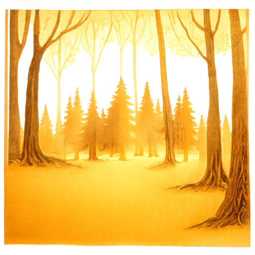
The close view is a clear forest, but the distant prompt did not take: reduced in size it is still a forest, with no recognizable pyramids. The low-frequency component of this scene is a warm yellow gradient that does not separate the two subjects.
Part B: Flow Matching from Scratch
Part 1: A Single-Step Denoising UNet
1.1 Implementing the UNet
The denoiser \(D_\theta\) is a UNet built from the nine operations in the handout, with hidden width
\(D\) (128 for the denoiser). Every convolution is followed by BatchNorm and GELU, except the very last
convolution, which is a plain Conv2d(D, 1, 3, 1, 1) so the output can take any real value.
| Op | Layers | Effect on the tensor |
|---|---|---|
| Conv | Conv2d(3, 1, 1) | changes channels only |
| DownConv | Conv2d(3, 2, 1) | halves H and W (28 → 14 → 7) |
| UpConv | ConvTranspose2d(4, 2, 1) | doubles H and W |
| Flatten | AvgPool2d(7) + GELU | 7×7 → 1×1 |
| Unflatten | ConvTranspose2d(7, 7, 0) | 1×1 → 7×7 |
| ConvBlock / DownBlock / UpBlock | Conv–Conv, DownConv–ConvBlock, UpConv–ConvBlock | same resolution change as the simple op, extra depth |
Shapes through the network (cat = channel-wise concatenation, the skip connections):
input 1×28×28 → ConvBlock D×28×28 → DownBlock D×14×14 → DownBlock
2D×7×7 → Flatten 2D×1×1 → Unflatten 2D×7×7 → cat with the
7×7 features (4D) → UpBlock D×14×14 → cat with the 14×14 features (2D)
→ UpBlock D×28×28 → cat with the first ConvBlock output (2D) → ConvBlock D×28×28
→ Conv2d → 1×28×28.
1.2 Training a denoiser
The denoiser is trained with an L2 loss on pairs of noisy and clean digits, where the noisy image is made from the clean one on the fly: \[z = x + \sigma\epsilon,\qquad \epsilon\sim\mathcal{N}(0, I),\qquad L = \mathbb{E}_{z,x}\,\lVert D_\theta(z) - x\rVert^2.\] Pixels are normalized to \([0, 1]\). Noise is drawn fresh for every batch, so each epoch shows the network a different corruption of every digit.
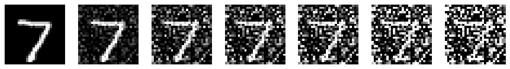
Training setup
| Setting | Value |
|---|---|
| Data | MNIST training set, shuffled each epoch; noised when a batch is fetched |
| Noise level | σ = 0.5 |
| Model | UNet, D = 128 |
| Optimizer | Adam, learning rate 1e-4 |
| Batch size / epochs | 256 / 5 |
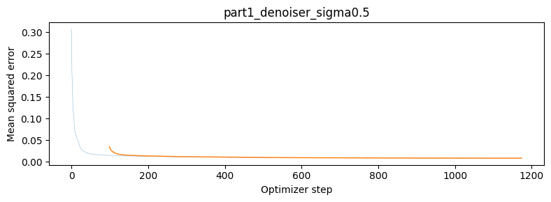
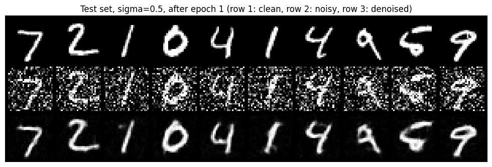
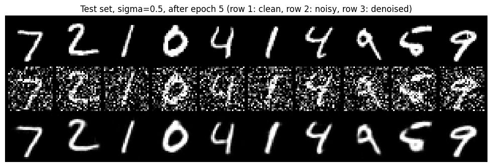
After one epoch the denoiser already removes most of the noise but leaves slightly soft, smeared strokes. After five epochs the strokes are sharper and thin parts of the digits are better preserved.
1.2.2 Out-of-distribution noise levels
The denoiser only ever saw σ = 0.5. Here is the same test digit, with the same ε, at other noise levels:
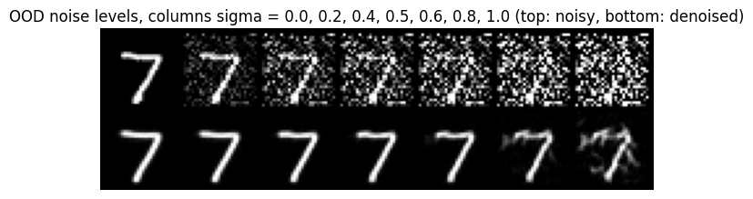
For σ up to about 0.6 the output is a clean digit, so the model generalizes to nearby noise levels, including lower ones. At σ = 0.8 the stroke becomes faint and smeared, and at σ = 1.0 it breaks into fragments. At that point the noise is much stronger than anything the network saw during training, so it has no reliable notion of what to remove. A model trained at one noise level is therefore not a general denoiser; this is part of the motivation for conditioning on a noise level or time in Part 2.
1.2.3 Denoising pure noise
To try to make the denoiser generative, I repeated the same training (same UNet, optimizer, batch size, 5 epochs) but gave it pure noise \(z\sim\mathcal{N}(0, I)\) as input, still asking for a clean digit \(x\) as output.
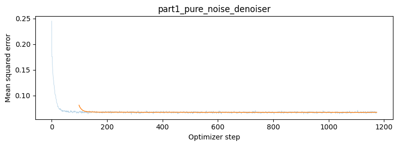
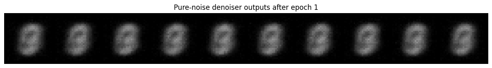
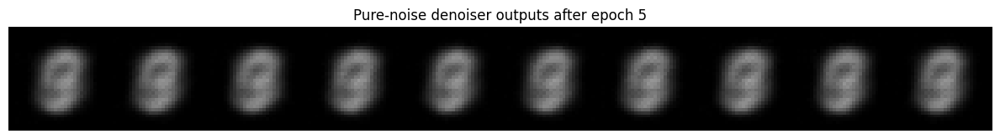
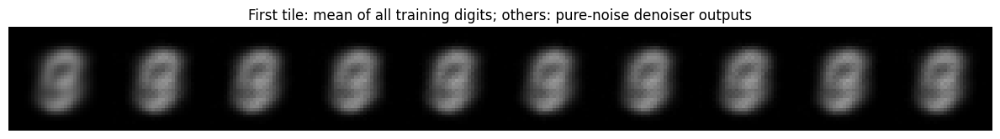
Patterns and why they exist
Every output is roughly the same blurry centered blob, which is likely a blurry overlap of strokes from all digits. This oberservation is the same for different noise inputs. Epoch 5 is slightly smoother than epoch 1 but it is still the same picture. The model never produced a sharp, individual digit at any point.
This follows directly from the MSE loss. The input \(z\) is independent of the target \(x\), so it carries no information about which digit to output. For a fixed input, the prediction that minimizes the expected squared error against all training images is their mean, \(\mathbb{E}[x]\): the centroid of the training set in pixel space, which is a blurry average of all digits. The numbers match this:
- mean squared error between the outputs and the dataset-mean image: 0.0003, versus 0.066 between a real digit and that mean;
- pixel-wise standard deviation across the 10 outputs: 0.006, so the outputs barely differ from each other;
- the training loss plateaus at about 0.067, the same as the per-pixel variance of the data around its mean. The network cannot do better than predicting the mean.
So one-step MSE denoising returns the average of all plausible answers instead of a sample from the data distribution, which is why Part 2 denoises iteratively with flow matching.
Part 2: Flow Matching
2.1–2.2 Time-conditioned UNet and training
Flow matching starts from a pure noise image \(x_0\sim\mathcal{N}(0, I)\) and moves it to a clean image \(x_1\). Training points are linear interpolations between the two, and the flow is the constant velocity along that line: \[x_t = (1-t)\,x_0 + t\,x_1,\qquad \frac{d x_t}{dt} = x_1 - x_0,\qquad L = \mathbb{E}_{x_0,x_1,t\sim U[0,1]}\,\lVert (x_1-x_0) - u_\theta(x_t, t)\rVert^2 .\] So the network does not predict the clean image; it predicts the velocity, which contains both the image and the noise to remove.
To condition on \(t\), I embed the (already normalized, in \([0,1)\)) scalar with two FCBlocks
(Linear → GELU → Linear) and multiply the result into the UNet at two places:
the Unflatten output (2D channels) and the first UpBlock output (D channels).
def forward(self, x, t):
D = self.num_hiddens
t = t.to(x.dtype).reshape(-1, 1) # t is already normalized to [0, 1)
t1 = self.fc1_t(t).view(-1, 2 * D, 1, 1) # FCBlock(1 -> 2D)
t2 = self.fc2_t(t).view(-1, D, 1, 1) # FCBlock(1 -> D)
x0 = self.in_block(x) # (D, 28, 28)
d1 = self.down1(x0) # (D, 14, 14)
d2 = self.down2(d1) # (2D, 7, 7)
unflat = self.unflatten(self.flatten(d2)) * t1 # modulated bottleneck (2D, 7, 7)
u1 = self.up1(torch.cat([unflat, d2], 1)) * t2 # modulated first up-block (D, 14, 14)
u2 = self.up2(torch.cat([u1, d1], 1)) # (D, 28, 28)
h = self.out_block(torch.cat([u2, x0], 1)) # (D, 28, 28)
return self.out_conv(h) # (1, 28, 28): the predicted flowThe training step picks a random time per image, interpolates, and regresses the flow:
def time_fm_forward(unet, x_1, num_ts): # Algorithm 1
N = x_1.shape[0]
x_0 = torch.randn_like(x_1) # pure noise
t = torch.rand(N, device=x_1.device) # t ~ U[0, 1)
t_b = t.view(N, 1, 1, 1)
x_t = (1 - t_b) * x_0 + t_b * x_1 # linear interpolation noise -> data
return F.mse_loss(unet(x_t, t), x_1 - x_0) # target flow = x_1 - x_0| Setting | Value |
|---|---|
| Model | time-conditioned UNet, D = 64 |
| Batch size / epochs | 64 / 10 |
| Optimizer | Adam, initial lr 1e-2, ExponentialLR with γ = 0.11/10, stepped once per epoch |
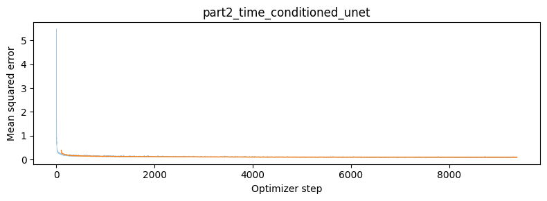
2.3 Sampling
Sampling integrates the learned flow from noise at \(t=0\) to data at \(t=1\) with Euler steps of size \(1/T\), here \(T=50\):
@torch.inference_mode()
def time_fm_sample(unet, img_wh, num_ts, seed=0, num_samples=10): # Algorithm 2
unet.eval()
dev = next(unet.parameters()).device
H, W = img_wh
gen = torch.Generator(device=dev).manual_seed(seed)
x = torch.randn(num_samples, 1, H, W, generator=gen, device=dev) # x_0 ~ N(0, I)
dt = 1.0 / num_ts
for i in range(num_ts): # Euler steps, t = 0 ... 1
t = torch.full((num_samples,), i / num_ts, device=dev)
x = x + dt * unet(x, t)
return x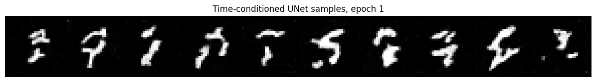
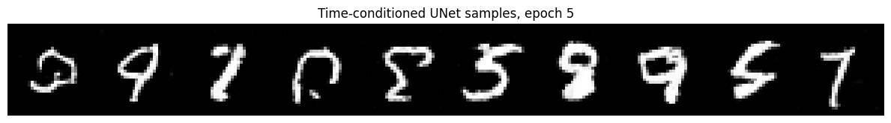
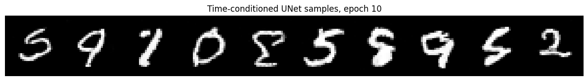
After one epoch the samples are fragments of strokes with no clear digit shape. By epoch 5 most are closed, readable digits, and by epoch 10 they are sharper and cleaner. Some are still malformed or ambiguous, as expected: the model has no way to know which digit it is supposed to produce, and the samples are imperfect but legible.
2.4 Adding class conditioning to the UNet
To get better and controllable samples I added class conditioning. The class is a one-hot vector embedded by two more
FCBlocks (fc1_c: 10 → 2D, fc2_c: 10 → D), and the
modulation becomes class scales, time shifts. So that an unconditional model stays available for guidance, the
class vector is set to zero with probability \(p_{\text{uncond}} = 0.1\) during training (implemented with a mask).
# class-conditioned UNet: only the two modulation lines change
c_onehot = F.one_hot(c, num_classes).float() * mask.view(-1, 1) # mask == 0 -> zero vector
c1, c2 = self.fc1_c(c_onehot).view(-1, 2*D, 1, 1), self.fc2_c(c_onehot).view(-1, D, 1, 1)
unflat = c1 * self.unflatten(self.flatten(d2)) + t1 # class scales, time shifts
u1 = c2 * self.up1(torch.cat([unflat, d2], 1)) + t22.5 Training the class-conditioned UNet
Training is the same as for the time-only model, with the class label added and the 10% class dropout:
def class_fm_forward(unet, x_1, c, p_uncond, num_ts): # Algorithm 3
N = x_1.shape[0]
x_0 = torch.randn_like(x_1)
t = torch.rand(N, device=x_1.device)
t_b = t.view(N, 1, 1, 1)
x_t = (1 - t_b) * x_0 + t_b * x_1
keep = (torch.rand(N, device=x_1.device) >= p_uncond).float() # drop the class 10% of the time
return F.mse_loss(unet(x_t, c, t, keep), x_1 - x_0)One training function covers the baseline and both no-scheduler comparison runs, so the three runs differ only in learning rate and scheduler. Checkpoints are saved after epochs 1, 5 and 10.
def train_class_fm(tag, lr, use_scheduler, epochs=10, batch_size=64,
hidden=64, num_ts=300, p_uncond=0.1, seed=SEED):
torch.manual_seed(seed)
loader = make_loader(batch_size, seed=seed)
fm = ClassConditionalFM(
ClassConditionalUNet(in_channels=1, num_classes=10, num_hiddens=hidden),
num_ts=num_ts, p_uncond=p_uncond,
).to(device)
optimizer = torch.optim.Adam(fm.parameters(), lr=lr)
scheduler = (torch.optim.lr_scheduler.ExponentialLR(optimizer, gamma=0.1 ** (1.0 / epochs))
if use_scheduler else None)
losses = []
for epoch in range(1, epochs + 1):
fm.train()
for images, labels in loader:
images, labels = images.to(device), labels.to(device)
loss = fm(images, labels)
optimizer.zero_grad(set_to_none=True)
loss.backward()
optimizer.step()
losses.append(loss.item())
if scheduler is not None:
scheduler.step() # once per epoch
if epoch in (1, 5, 10):
torch.save({'model': fm.state_dict()}, OUT / f'{tag}_epoch{epoch}.pt')
return losses
class_losses = train_class_fm('class_sched', lr=1e-2, use_scheduler=True) # baseline
nosched_losses = train_class_fm('class_nosched', lr=1e-3, use_scheduler=False) # compensation
nosched_losses_og = train_class_fm('class_nosched_og', lr=1e-2, use_scheduler=False) # ablation| Run | Learning rate | Scheduler |
|---|---|---|
class_sched (baseline) | 1e-2 initially | ExponentialLR, γ = 0.11/10, stepped once per epoch |
class_nosched | constant 1e-3 | none |
class_nosched_og | constant 1e-2 | none |
All runs use the class-conditioned UNet with D = 64, batch size 64, 10 epochs and puncond = 0.1. The first plot is the required 2.5 training curve; the other three are for the scheduler comparison in 2.6.
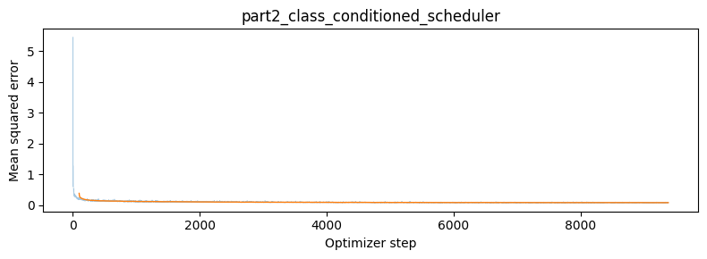
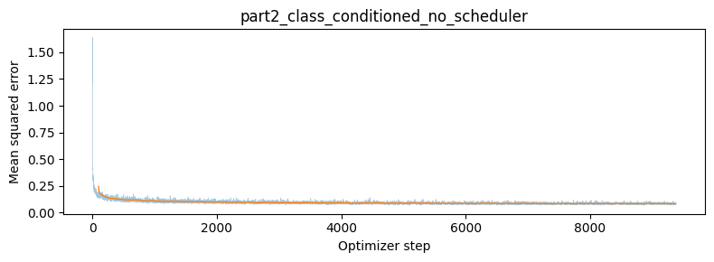
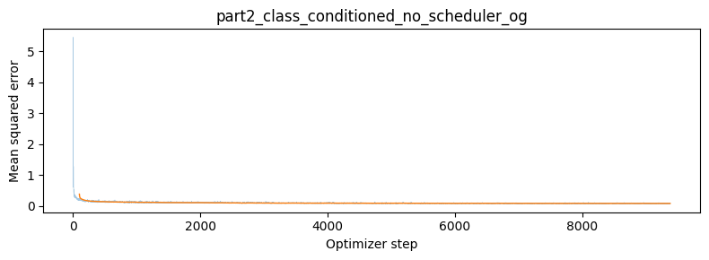
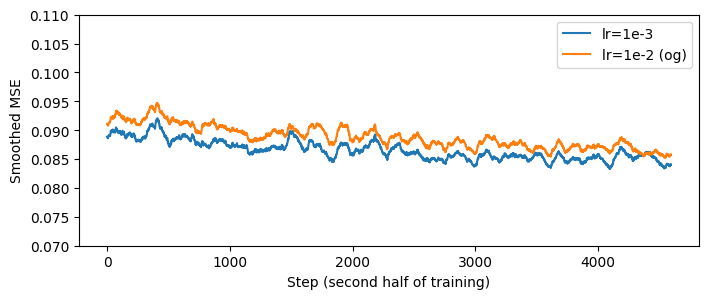
2.6 Sampling with classifier-free guidance
Sampling uses classifier-free guidance with γ = 5: at every step the flow is \(u = u_{\text{uncond}} + \gamma\,(u_{\text{cond}} - u_{\text{uncond}})\), with \(T=300\) Euler steps. I generate 4 samples per digit (each column is one digit).
@torch.inference_mode()
def class_fm_sample(unet, c, img_wh, num_ts, guidance_scale=5.0, seed=0): # Algorithm 4
unet.eval()
dev = next(unet.parameters()).device
N, (H, W) = c.shape[0], img_wh
gen = torch.Generator(device=dev).manual_seed(seed)
x = torch.randn(N, 1, H, W, generator=gen, device=dev)
ones, zeros = torch.ones(N, device=dev), torch.zeros(N, device=dev)
dt = 1.0 / num_ts
for i in range(num_ts):
t = torch.full((N,), i / num_ts, device=dev)
v_c = unet(x, c, t, ones) # conditional flow
v_u = unet(x, c, t, zeros) # unconditional flow (class dropped)
x = x + dt * (v_u + guidance_scale * (v_c - v_u)) # classifier-free guidance
return x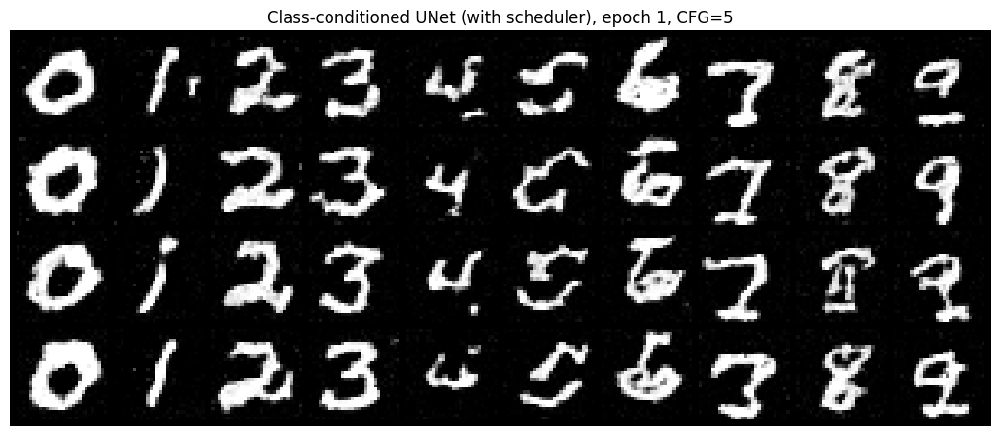
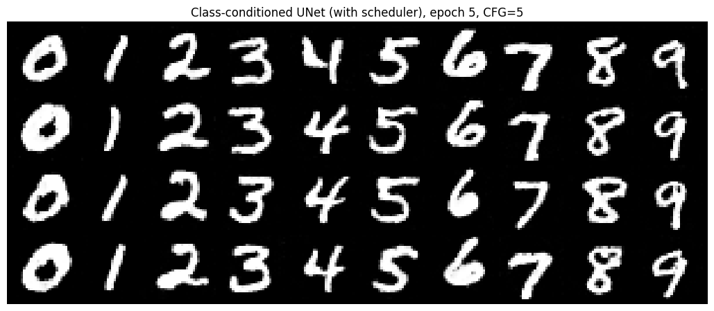
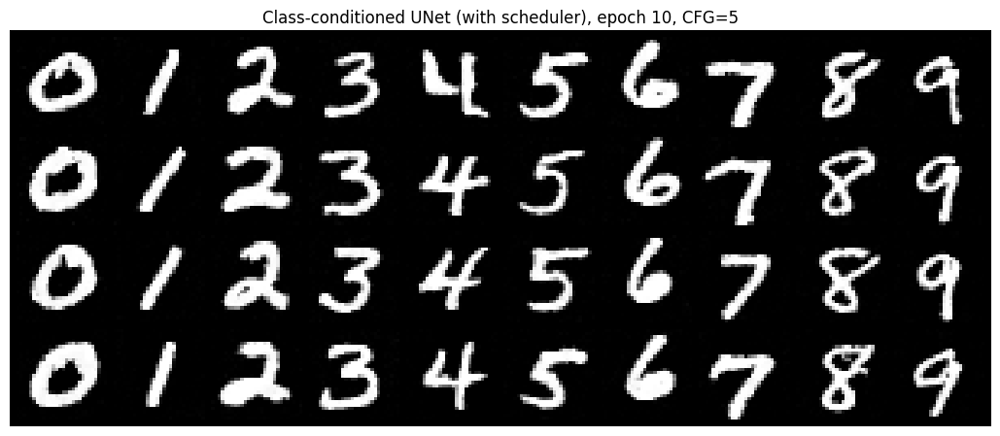
Class conditioning converges much faster than time conditioning alone. After a single epoch most digits are already recognizable and in the right column (a few 2s, 4s, 5s and 8s are still garbled), and by epochs 5 and 10 all forty samples are clean, correct digits with natural handwriting variation within a column.
2.6 (continued) Removing the learning-rate scheduler
The scheduler does two jobs: a large initial learning rate (1e-2) for fast early progress, and a decayed learning rate
at the end (about 1e-3 by epoch 10) so the weights settle instead of bouncing around the minimum. I removed
ExponentialLR and compensated with one change: a constant learning rate of 1e-3, the value
the scheduled run decays toward. Everything else (D = 64, batch size 64, 10 epochs, puncond = 0.1,
γ = 5, 300 sampling steps) is unchanged.
# (a) baseline from the handout
opt = torch.optim.Adam(fm.parameters(), lr=1e-2)
sched = torch.optim.lr_scheduler.ExponentialLR(opt, gamma=0.1 ** (1.0 / num_epochs)) # step once per epoch
# (b) no scheduler: just a smaller constant learning rate
opt = torch.optim.Adam(fm.parameters(), lr=1e-3)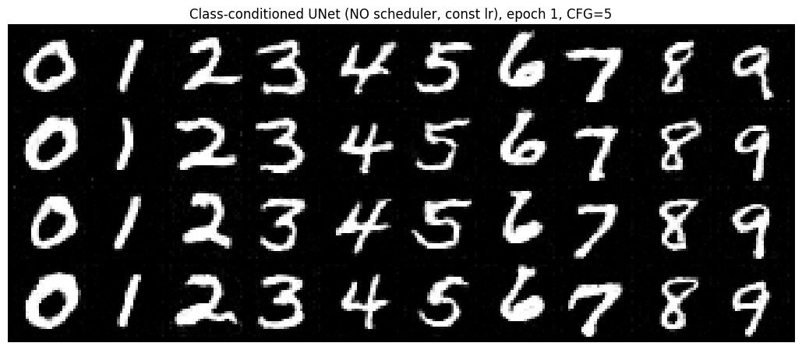
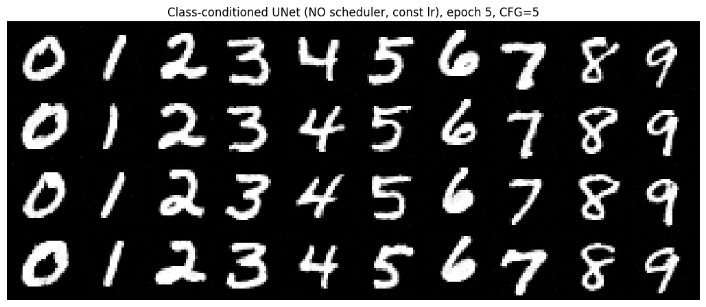
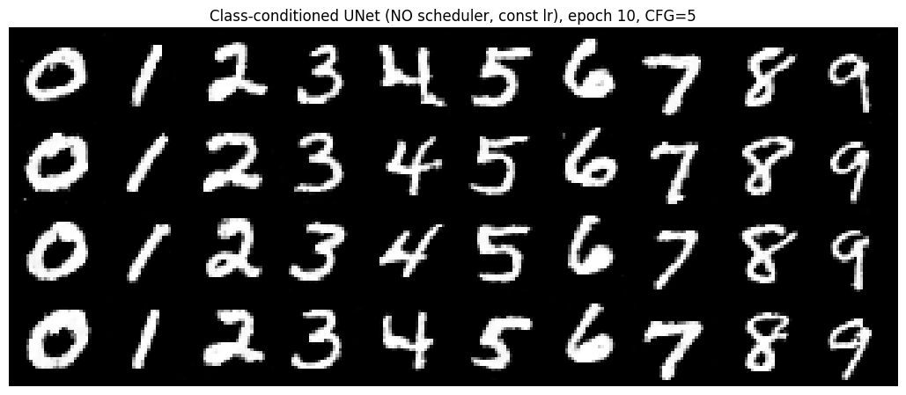
Does it match the scheduled run?
| Run | Learning rate | Mean loss, last 200 steps |
|---|---|---|
| With scheduler | 1e-2, decayed ×0.11/10 per epoch | 0.0846 |
| No scheduler | constant 1e-3 | 0.0842 |
The final losses are essentially identical, and the epoch-10 samples are equally clean and correct. The no-scheduler run is actually better early on: at epoch 1 its samples are already mostly clean, whereas the scheduled run, which starts at lr 1e-2, still has garbled digits.
Why 1e-3, and what I tried first
I also trained a version with a constant lr of 1e-2 and no scheduler, to see what the lower learning rate buys.
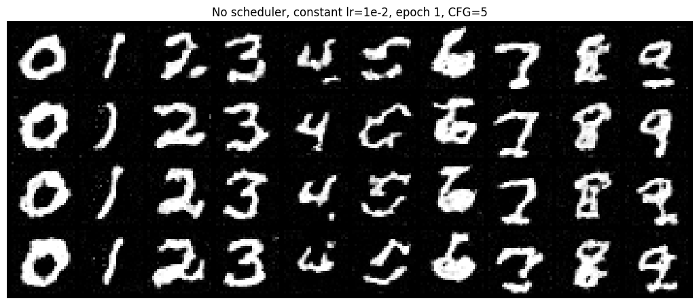
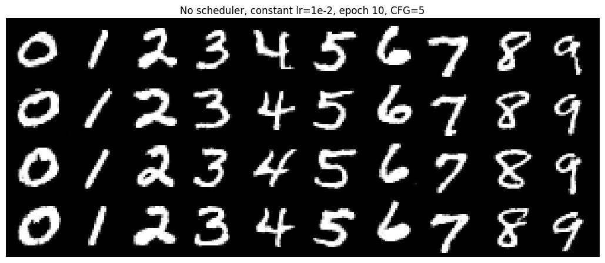
Constant 1e-2 also ends with clean-looking samples at epoch 10, so on MNIST the scheduler is not essential for the final result. What it does change is the early and late training behaviour: with lr 1e-2 the first epoch is rough (the loss starts with a much larger spike, about 5.5 against 1.6 for 1e-3), and in the second half of training its loss stays a little above the 1e-3 run. Using a constant 1e-3 gets the smoother start and the low late-training loss with a single hyperparameter and no scheduler. Each setting was trained once, so small differences should be read as tendencies rather than precise measurements.